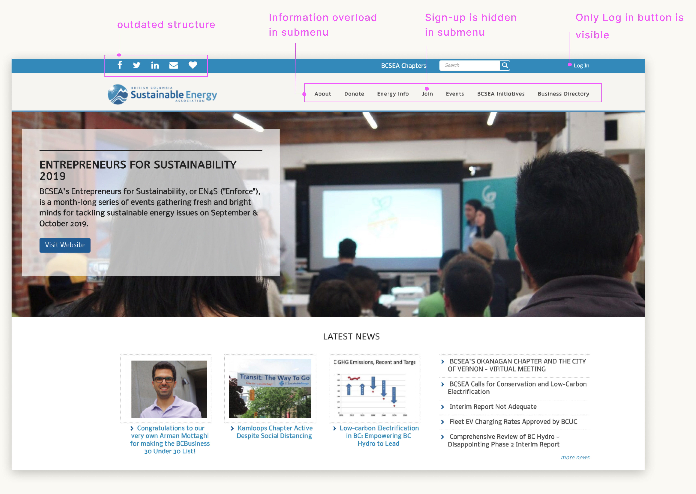
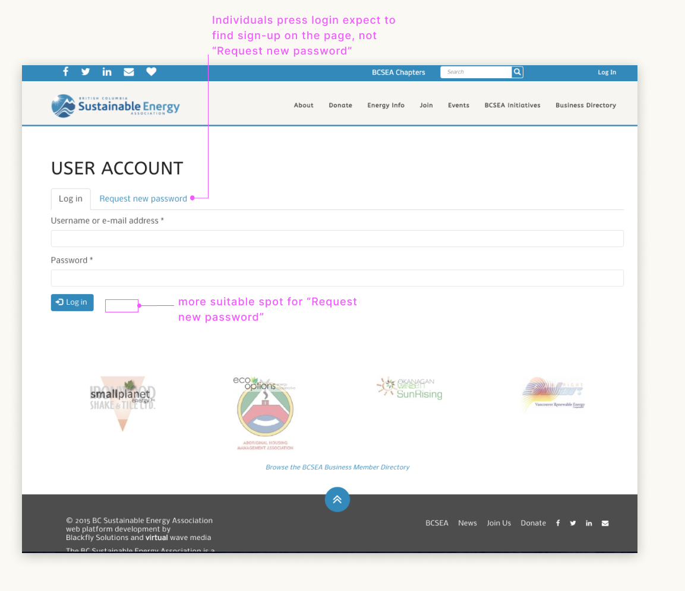
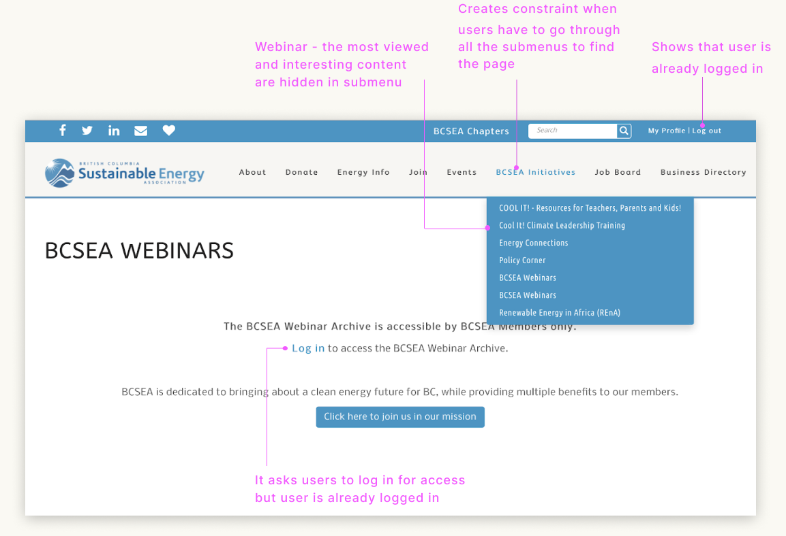
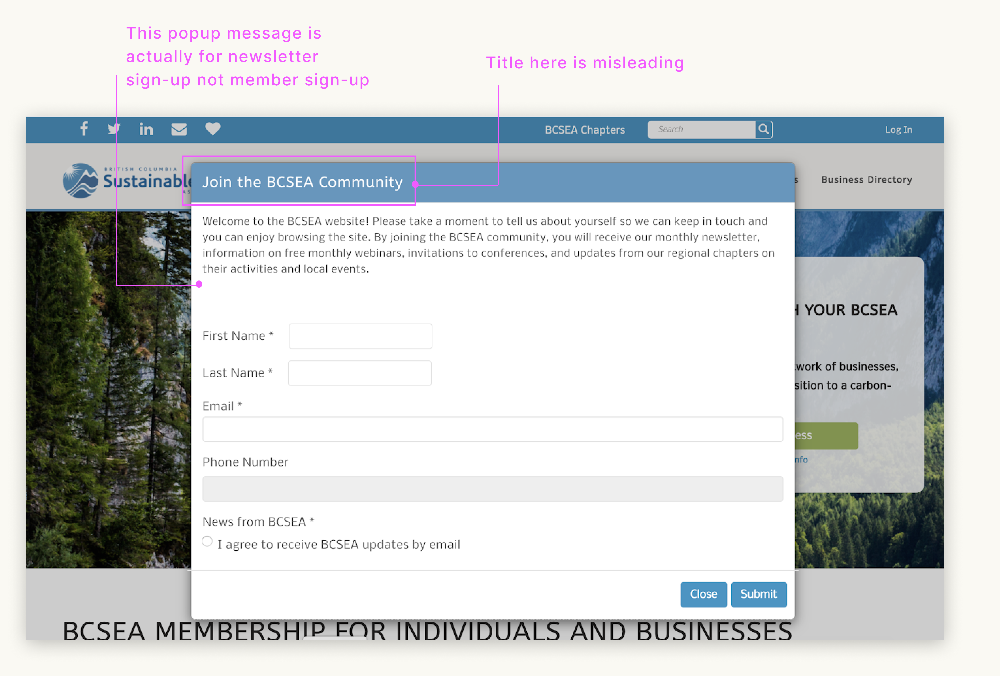
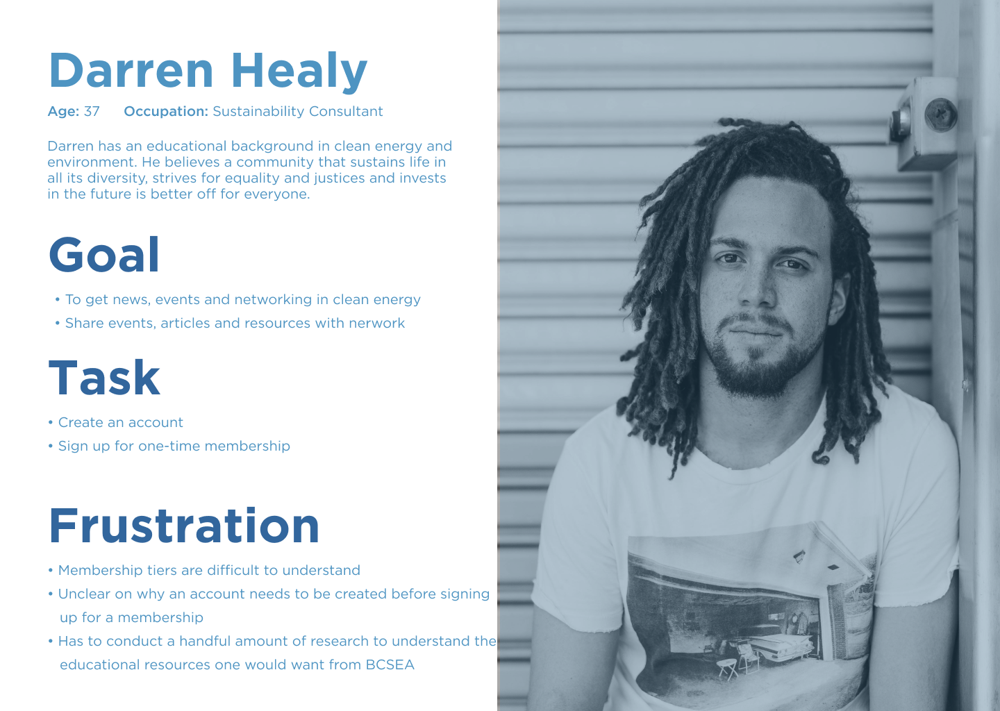
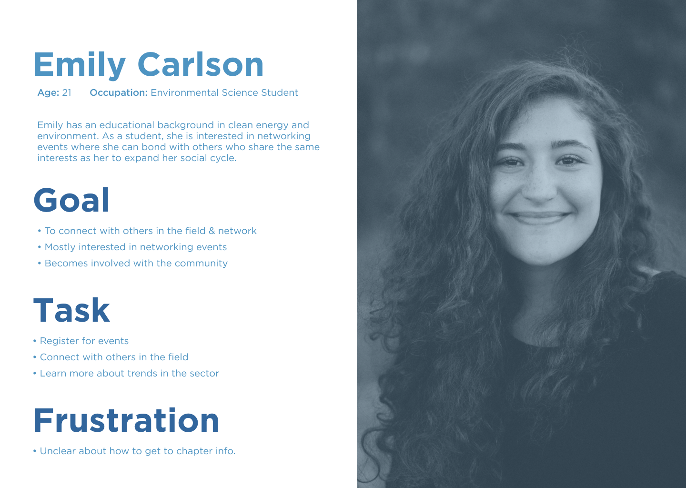
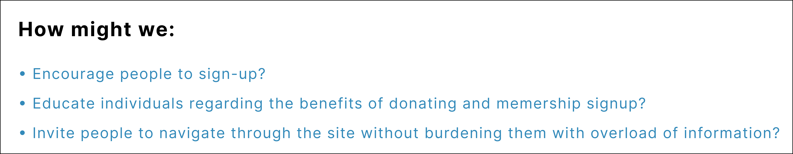

During my time working as a UX/UI designer for BCSEA, I was collaborating with other designers to redesign the BCSEA website. The bcsea.org website was created over 10 years ago and has not been redesigned since. Our goal is to redesign the most revenue-generating pages and focus on pages that have been flagged most problematic: the membership pages and members' accounts. The poor design fo the members’ account is one of the reasons individuals are not signing up or renewing their memberships. The following case study elucidates the findings and research of the business problem and how the research helped us build an intervention that would alleviate customer frustration and provide value to the business.
Team
Jisoo Lee, Behfar Zamani, Christina Hoang
My roles
User research, User testing, UX design
Tools
Figma, Sketch, Miro, Slack, Google Meeting, Google Analytics, CiviCRM
For this case study, my roles included devising site map, user journey and conducting user research to support our intervention and derive a design solution to the problems.
The BC Sustainable Energy Association (BCSEA) is a volunteer-based, charity that supports the sustainable production, distribution, and consumption of energy in British Columbia and beyond. The association collaborates with governments, industry, universities and other non-governmental organizations to put in place the conditions needed to accelerate the province’s transition to a lower-carbon economy.
While having a high retention rate for their current websites, the board notices the membership
signup rate is dropping, and members have stopped renewing their memberships. Since the
organization depends on memberships and members donate to maintain operation, the problem is
acute and is in dire need of a solution.
Additionally, the site itself contains information that is of interest to both members and
non-members alike. However, Google analytics have demonstrated that while initial interest is
good, the number of users who continue interacting with the site beyond one minute is
limited.
This is the likely result of a decade of uploading information without regard to how that
information is organized.
To understand the underlying issue of membership sign-up, I have devised a user flow for the current membership sign-up workflow. Through drawing up the user flow, I noticed the sign-up process contains a lot of redundant and unnecessary questions, for instance, the process asks individuals to login when they are signing up. In most cases, people who want to sign up for an individual member does not already have a BCSEA account.

Within the team, we have each evaluated the BCSEA site interface using Heuristic Evaluation separately to finish tasks like membership sign-up and search up webinars. We have also invited 10 participants (young professionals in the clean and renewable energy sector and students). The interview was done remotely using Google Meet and we observed the participants while they speak out their thoughts and process of the navigation. Our findings have concluded several issues below are deemed most problematic:
Participants must sign up from the “become a member” button that is hidden under the “join” tab in the navigation bar, which relies on recognition rather than recall.
Participants have to look through all the menu tabs to locate the buttons. Additionally, there are two “BCSEA Webinar” buttons after log-in, with one of the buttons being broken and asking participants to sign in again. This resulted in 4 participants signing in again only to end up on the same page, and repeated the process until facilitators had given them hints to try the second webinar button.
 A lot of the pages are unorganized and contains disconnected information that misleads users elsewhere. For example, users received a popup message that says “Join the BCSEA Community” on the sign-up page, however the message is actually intended for newsletter sign-up. The word choice is deceptive, causing many users to misunderstand that as membership sign-up.
In our primary research, we found out that the various pain points that have hindered individuals from navigating through the BCSEA sites and sign-up for a membership. The primary goal is to improve the process for membership signup and increase the number of membership sign-up renewals. The secondary focus would be on increasing traffic to the site and donation pages to generate revenue for the organization. In general, the overall accessibility and aesthetic of the website also have to be taken into account.
We are focusing on individual and business members for our tasks as these are the two main groups on the BCSEA signup page. Below are the two personas I have created to outline the goals and tasks of each member.
 BCSEA is a respectable and essential organization that supports clean energies and sustainable
practices in BC and Canada. As such their website should project that image as well. Though
their site contains a lot of interesting information, they are not particularly exciting, nor is
the information architecture well arranged. We thought of several “How Might We” questions to
help us brainstorm.

As a result of our study, we found that the BCSEA website currently contains several severe usability problems that may be hindering the organization from achieving their goals. As a solution, we suggest the following recommendations for the interface design of the BCSEA website. Additionally, we have created mockups to further illustrate our findings.
The navigation bar is rearranged to better suit BCSEA's goals. As some participants had confused the donation button as the login/sign-up button, the login button is combined with sign-up and relocated to the top right corner as a standalone button to make it more apparent on the interface. To increase clear visibility of system status, the BCSEA blue color could be used to highlight the button.
.png)

As some participants had confused the donation button as the login/sign-up button, we combined login with sign-up and relocating it to the top right corner as a standalone button to make it more apparent on the interface. To increase clear visibility of system status, the BCSEA blue color could be used to highlight the button. The “request new password” button has been replaced with “sign-up”, and moving “request new password” below the password text box where users will easily see it. This will provide “recognition rather than recall”.
Once users have created an account and are signed in, they are able to access the BCSEA
Webinars. As mentioned in the results, there are currently two “BCSEA Webinars” sub-menu. We
recommend removing one of the duplicated sub-menus to prevent errors in the future and for
better efficiency of use. With “BCSEA Webinars” being one of the primary features for
members of
the website, we suggest that it should be more easily accessible by having it as its own
heading
in
the navigation menu.
Lastly, we recommend implementing filters on the “BCSEA Webinars” page,
such as search by recency, by year, and by keyword search. With the addition of filters, users
would be able to find specific articles related to the topic they are searching for without
having to scroll through the whole length of the webinars page. This will eliminate frustration,
and provide efficiency and ease of use for users when searching for articles.
This project was a good opportunity for me to practice my user research testing and interview skills. I recognize that my previous projects lacked direct user input, thus making it difficult to support certain design decisions. This project taught me how to work with real qualitative data based on people I am building the product for, making the design more applicable for the target users. As a result, the impact outcome is much more rewarding and valuing for the organization.